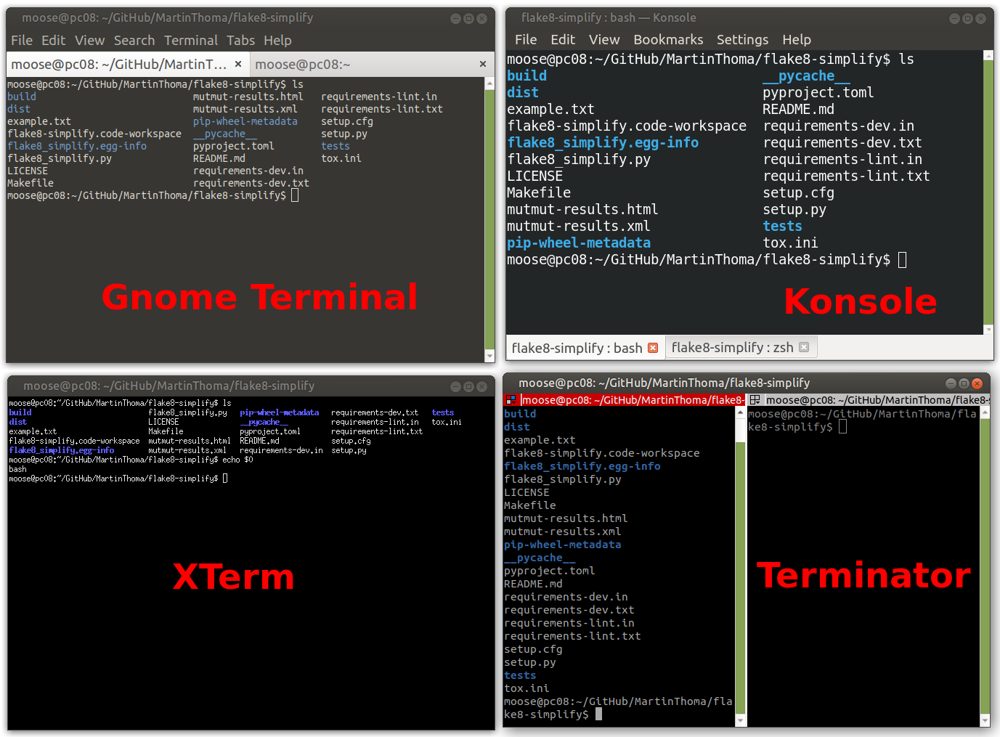
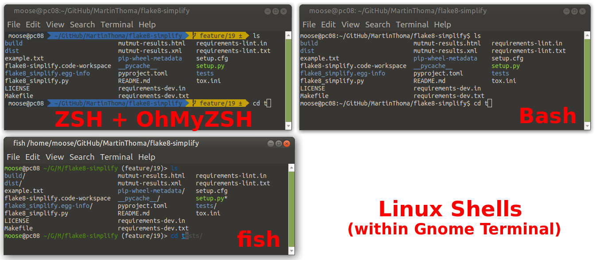
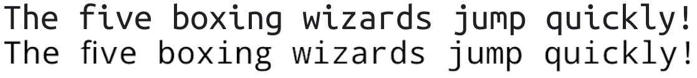
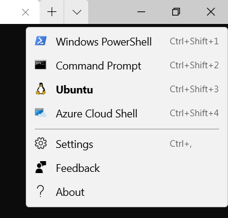
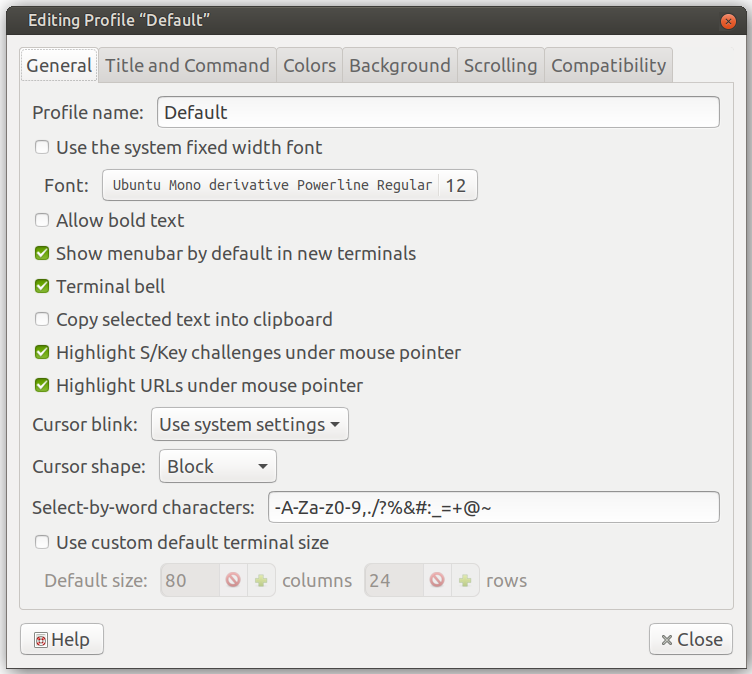
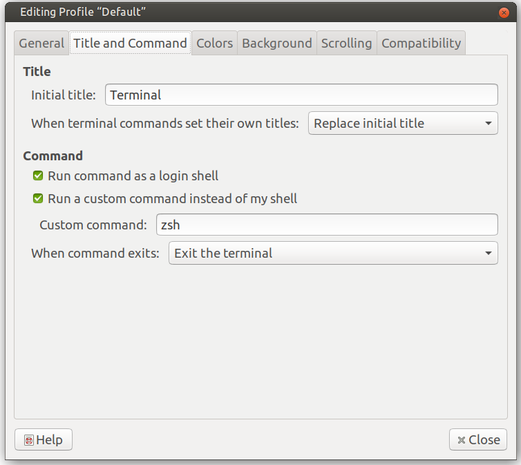
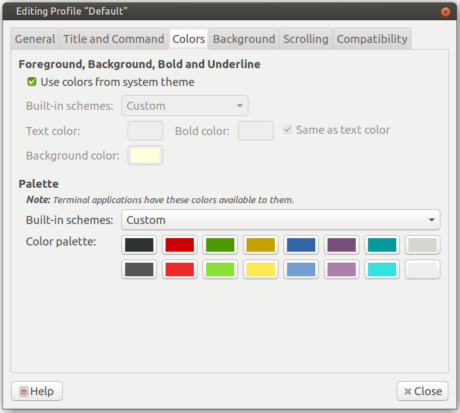

As a developer with 10+ years of experience, I love using the shell. The commands never change, I can create custom shortcuts, it’s reliable and fast. The defaults are not great, though. After reading this article, you will know how to get an awesome shell + terminal on your system.
Terminology
The shell is what actually executes the command. The terminal is a wrapper that runs the shell.
The terminal is where you set the font face, font size, color schemes, support for multiple tabs. Examples of terminal emulators are GNOME terminal, Konsole on KDE, Terminator, and XTerm. On Linux, I recommend keeping the default. On Windows, the Windows Terminal is awesome. On Mac, I’ve heard good things about iTerm 2.

Four terminal emulators on Linux (Gnome Terminal, Konsole, XTerm, Terminator). XTerm does not directly support tabs. The others have 2 tabs open. All of them run the Bash shell. The image was created by Martin Thoma.The shell stores the history of entered commands, defines how you set
environment variables, how you switch the current directory. Examples of
shells on Linux are ZSH,
Bash,
fish. On Windows, the
typical shell is PowerShell. You
can see which shell you are running by executing echo $0. On Linux, it’s most
likely Bash.

Three Linux shells (ZSH, Bash, fish) within the Gnome Terminal. I’ve heavily customized the ZSH shell; Bash and fish show the default. You can see that fish has an in-line autosuggestion feature that the two other shells lack. Image by Martin Thoma.Every shell has a prompt. The prompt is what is written before your cursor.
It signals that you can enter a command and gives useful context
information. In the example above, the prompt contains the user name moose,
the current computer pc08, the current working directory
~/GitHub/MartinThoma/flake8-simplify, the active git branch feature/19 and
the fact that there are modifications ±.
Fonts
No matter which terminal you use, the font matters. You might want to have a monospace font. And you for sure want a powerline font; trust me on that one. The powerline font gives your shell the possibility to use characters that look like images. It can make the prompt way nicer.
I like Ubuntu Mono and Droid Sans Mono:

The top line is Ubuntu Mono, the bottom example is written in Droid Sans Mono. I like Ubuntu Mono a bit better, but both are reasonable fonts. Image by Martin ThomaThere are also “programming fonts” like Fira Code or JetBrains Mono. I don’t like them because they make it harder for me to really know what is written. They look nice, though.
Windows Terminal
First, make sure you have the Windows Terminal installed.
Launch a terminal and navigate to the settings. It’s this small downward-pointing “arrow”:

Click on “Settings”. The screenshot was taken by Martin ThomaYou should see a JSON file which you can change to fit your taste. I have the following:
Download and install all 4 “DejaVu Sans Mono Powerline” fonts. On all systems I know, installing a font is done by double-clicking it. Then a window opens which has an “Install” button.
Linux and Windows Terminal: Aminal
Aminal is a terminal emulator written in Go. It can be used on Linux, Windows, and Mac. It allows configuration via a configuration file and includes the colors and keyboard shortcuts.
First, you need to install and configure Go on your system. On Ubuntu, it works like this:
$ sudo apt-get install golang libgl1-mesa-dev xorg-dev
$ export GOPATH="$HOME/go"
$ export GOBIN=$(go env GOPATH)/bin
Then you can install and run aminal:
$ go get -u github.com/liamg/aminal
$ aminal
Linux: Gnome Terminal
The Gnome terminal can be customized by editing the profile. Here I set the Ubuntu Mono derivative Powerline Regular with a font size of 12.

Image by Martin ThomaThe command is set to zsh as this is my favorite shell.

Image by Martin ThomaThe colors are set to solarized dark (left-to-right, top-line / bottom-line):
- Background: #2e3436 / #555753
- Dark Red: #cc0000 / Light Red: #ef2929
- Dark Green: #4e9a06 / Light Green: #8ae234
- Dark Yellow: #c4a000 / Light Yellow: #fce94f
- Dark Blue: #3465a4 / Light Blue: #729fcf
- Dark Purple: #75507b / Light Purple: #ad7fa8
- Dark Teal: #06989a / Light Teal: #34e2e2
- Dark Gray: #d3d7cf / Light Gray: #eeeeec

Linux Shell: fish
Install the fish shell:
sudo apt-get install fish
Change the default shell in your terminal emulator to fish. Within Gnome
Terminal, it is called “custom command”.
Then install “Oh My Fish”:
curl -L https://get.oh-my.fish | fish
And set the theme to agnoster:
omf install agnoster
omf theme agnoster
For cool features of the fish shell, read Why I Use Fish Shell Over Bash and Zsh by Alec Brunelle.
Aliases
A core part of making the terminal awesome is making common commands short. To do so, you create an alias for a command — a shorter version of the original command. The most common example is changing a directory to go one level up. For example, if you are in /home/user/foo/bar, you want to get to /home/user/foo. In most shells, you have to enter cd ... I like to abbreviate that to ... So I have the alias alias ..='cd ..'. The syntax may vary, depending on your shell. For Bash, ZSH, and fish, it is:
alias short='long'
For Bash, you insert them in ~/.bashrc, for ZSH in ~/.zshrc. In fish, it is different.
Here are some aliases I like:
# Shorten things
alias ..='cd ..'
alias ...='cd ../../'
alias ll='ls -alF'
alias la='ls -A'
alias l='ls -CF'
alias c='clear'
# If your terminal supports colors, use them!
alias ls='ls --color=auto'
alias grep='grep --color=auto'
alias fgrep='fgrep --color=auto'
alias egrep='egrep --color=auto'
alias diff='colordiff'
# Works only if you have notify-send
alias alert='notify-send --urgency=low -i "$([ $? = 0 ] && echo terminal || echo error)" "$(history|tail -n1|sed -e '\''s/^\s*[0-9]\+\s*//;s/[;&|]\s*alert$//'\'')"'
Summary
- Make sure you have a reasonable terminal emulator. I suggest Gnome Terminal for Linux, iTerm 2 for Mac, and Windows Terminal for Windows.
- Install a good powerline font like Ubuntu Mono Powerline.
- Adjust the font face, font size, and color scheme of your terminal emulator to your preferences.
- Install a good shell. I suggest fish for Linux and PowerShell for Windows.
- Adjust the prompt of your shell to your needs. I like the agnoster theme.